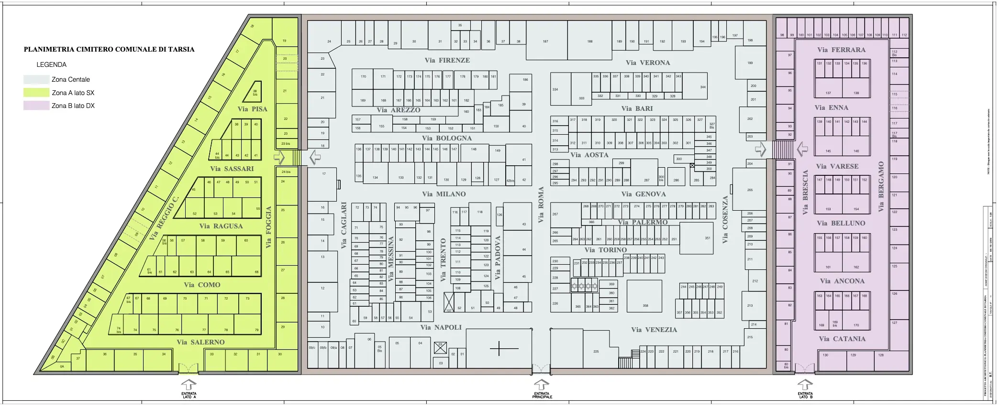

Cimitero di Tarsia
Archivio storico dei defunti del cimitero comunale
Archivio storico dei defunti del cimitero comunale
Consulta la planimetria per individuare la zona, la via e la posizione del loculo indicate nella scheda del defunto.
